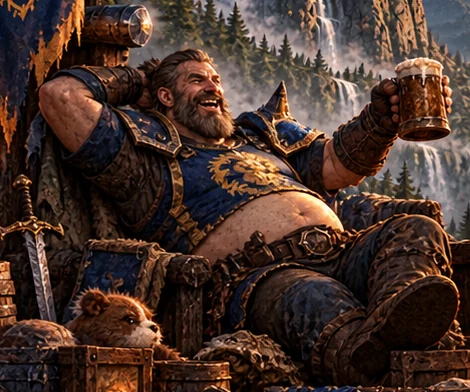
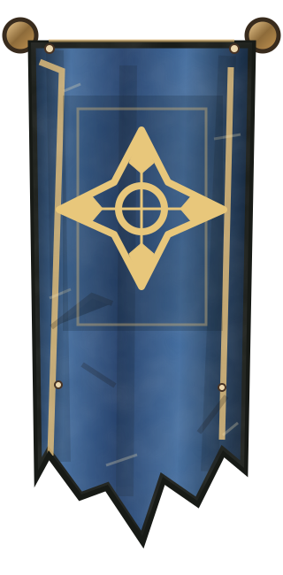
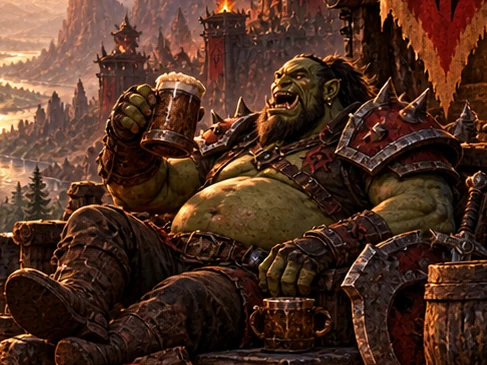
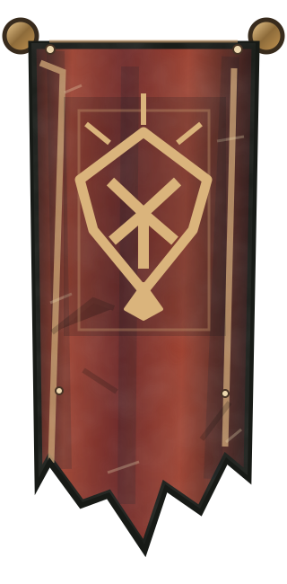

A new world is calling. Explore original World of Warcraft addons crafted to remember the adventures, companions and stories that make your hero a legend.
Once, we raided until sunrise. Now there are school runs, early meetings and an alarm clock that doesn't care about boss mechanics. The adventure never stopped — it just got a bedtime.


ALLIANCE DAD · HUMAN WARRIOR
The Last-Pull Legend
Once a fearless frontline hero. Now a father who logs in after bedtime, carries the group and occasionally wakes the house laughing.
“One last dungeon.” — famous last words since 2006.


HORDE DAD · ORC WARRIOR
The Bedtime Battle Chief
Always ready for battle. He just needs five minutes to stretch — and maybe to check whether tomorrow is a school day.
Original fantasy art and custom heraldry. Independent fan project; not official faction insignia.
THE TWO BANNERS
THE CAMPFIRE CHRONICLES / OUR STORY
Older heroes. Same world.
Twenty years ago, we had all night.
We chased loot, wiped on bosses, explored every corner of Azeroth and promised ourselves that this really would be the last dungeon before bed.
Back then, tomorrow could wait.
Then life happened.
We got older. We became fathers. Careers, families, school runs, mortgages and responsibilities took over. Our hair got a little greyer, our reaction times a little slower, and staying online until 3 AM became a much bigger achievement than defeating a raid boss.
But we never really left Azeroth.
Twenty years later, we're still here. Still playing. Still laughing at terrible pulls. Still finding our way back to the world that has been part of our lives for so long.
And that's why we created WoW Forge.
We're building addons for World of Warcraft: Forever that make everyday adventures easier, remove unnecessary hassle and help us remember the journeys we've taken.
Because when you're a dad with a job, a family and a thousand things to do, an hour in Azeroth is precious.
We want less time fighting menus, more time exploring, and more moments worth remembering.
We're not trying to reinvent World of Warcraft.
We're just making it a little easier to keep playing the game we've loved for twenty years.
Older heroes. Same adventures. Better tools.
Welcome to WoW Forge.
THE TWO BANNERS
THE ARCHIVE / CHAPTER 001
THE GUILD ARCHIVE
Tales of the forge.
Two addons are now taking shape: one preserves your adventures, the other helps you survive real-life aggro. Neither is publicly released yet.
❧THE GREENWOODWhere stories take root.Ancient trees. Golden light. Quiet magic.
✦
✣THE RED FRONTIERWhere legends are forged.Weathered earth. Firelight. Boundless adventure.
THE FIRST ARTIFACT / LIFE.FORGE
ARTIFACT 001 / THE LEGACY CHRONICLE
Your character. Your legend.
BUILD 70.8.0-alpha / Development
LifeForge chronicles the story behind a character: adventures, goals, friendships, places explored and memories worth keeping. An original in-game addon, developed for World of Warcraft: Forever.
THE LIFEFORGE SIGIL ✦ A LEGACY IN THE MAKING
LIFE.FORGE / UI PREVIEWILLUSTRATIVE CONCEPT · NOT A CLIENT SCREENSHOT
ACCOUNT LEGACY / PREVIEW
Every adventure leaves a mark.
LOCAL HISTORY
CHRONICLEStoryChapters and milestones
FOOTPRINTWorldPlaces you explored
MEMORIESLegacyMoments you saved
✧ THE CHRONICLEEXAMPLE LAYOUT
Begin your storyTrack your adventures from the moment you install01
Record your milestonesBuild a journey from observed events02
Preserve your memoriesKeep the moments that matter03
!
Not released yet. LifeForge Build 7 is an unverified alpha. Its Lua tests pass, but it still needs testing in the actual WoW client. No public CurseForge download is available.
Experience modules designed around meaningful, locally recorded in-game history. Some client-specific capabilities remain provisional.
01 / ARCHIVE◈
Legacy Chronicle
Follow your character's chapters, milestones and progression across recorded adventures.
02 / MEMORY✦
Memory Museum
Collect meaningful notes, favorite moments, letters and personal firsts in one place.
03 / EXPLORATION◎
Azeroth Footprint
Review visited zones in a recorded-data atlas. Not yet a verified interactive world map.
04 / CONNECTION✥
Companions & Guild
Remember the people, groups and guild moments actually observed during your journey.
05 / REFLECTION▦
Calendar & Wrapped
Look back at tracked sessions and milestones through visual calendar and summary views.
06 / OWNERSHIP⬡
Local Data & Backup
Keep records in WoW SavedVariables with guarded import and export. No website account required.
THE SECOND ARTIFACT / DAD MODE
NOVYX FORGE / ARTIFACT 002 / REAL-LIFE AGGRO
FORGE AFK / DAD MODE
THE RAID NEVER ENDS. IT JUST MOVES HOME.
You survived twenty years of Azeroth. But can you survive a hungry kid, a doorbell pull and a family Wi-Fi outage? FORGE AFK is a tiny, unapologetically ridiculous in-game addon for veteran players, parents and everyone dealing with real-life boss encounters.
12 REAL-LIFE AFK REASONSONE-CLICK DAD MODEv1.0.0-beta.2 / CLIENT TEST PENDING
✦ ✦ ✦AFKDAD MODE
FORGE AFK / DAD MODE / UI CONCEPTILLUSTRATIVE WEB DEMO · NOT A GAME SCREENSHOT
WHAT PULLED DAD AWAY?
Pick a real-life boss below to preview the addon’s funny AFK message and comeback. These buttons are a website demo; they do not interact with WoW.
AFK TIMER 06:42*
PREVIEW / TOILET RAID
INCOMING WHISPER / FRIENDHey Dadbod, are you coming to the dungeon?
NATIVE WOW AFK REPLY / EXAMPLE[Forge AFK] TOILET RAID! Nature called a ready check. Dad is fighting a real-life boss. BRB!
PARTY ANNOUNCEMENT / EXAMPLE[Forge AFK] Toilet raid! Nature called a ready check. BRB.
COMEBACK / EXAMPLEDad survived the Toilet Raid. No loot dropped. Back after 06:42!
I'M BACK — RESUME ADVENTURE
*Example time only. Silent Mode mutes group announcements, while WoW’s native AFK reply may still answer whispers. Client behavior will be verified after launch.
REAL-LIFE AGGRO
Twelve gloriously familiar reasons to step away, from Toilet Raid to Dad Tech Support.
AFK WHISPERS
Distinct themed messages set through WoW’s native AFK status. No duplicate auto-whisper bot.
THE COMEBACK
AFK timer, minimap shortcut, Silent Mode and a unique comeback for every reason.
AZEROTH CAN WAIT. DAD DUTY CAN'T.
THE QUESTLINE / ROAD TO RELEASE
Every legend has a path.
Development is visible on GitHub. Public addon downloads and updates are reserved for CurseForge once the addon passes real-client acceptance.
01
SOURCE & DESIGN
Forge the idea
Develop features, document decisions and maintain source on GitHub.
02
AUTOMATED TESTS
Prove the logic
LifeForge Build 7 has 67 passing headless Lua tests; Dad Mode also passes its Lua smoke tests. Neither validates the actual game client.
03
IN-CLIENT ACCEPTANCE
Test in Azeroth
Verify frames, APIs, persistence and performance inside the correct client.
04
PUBLIC RELEASE
Publish on CurseForge
Only after testing and approval. No download link until there is a real release page.
Once an addon is tested and approved for public release, the official download and update link will point to CurseForge. No NOVYX-hosted addon ZIPs are offered here.
Does FORGE AFK already work in World of Warcraft?
Its source and automated Lua checks are complete, but it has not yet been tested in the actual WoW Forever client. The example AFK and whisper texts on this website are illustrative, not recorded gameplay. Public downloads will follow only after client testing.
Does LifeForge already work in World of Warcraft?
Build 7 is a development alpha. Automated Lua tests pass, but actual client compatibility, visual behavior and persistence have not yet been verified. It must not be treated as a released addon.
Does LifeForge need a website account?
No. The intended product is a standalone in-game addon with local SavedVariables. This website is a project showcase, not a companion application or character-data service.
Is this an official Blizzard website?
No. WoW Forge is an independent fan-made addon project from NOVYX FORGE. It is not affiliated with, sponsored by, approved by, or endorsed by Blizzard Entertainment. All site emblems are original NOVYX designs. World of Warcraft and related names are trademarks of Blizzard Entertainment.
✦
THE CAMPFIRE / THE NEXT CHAPTER
The fires of adventure never fade.
Two addons are now being forged: LifeForge to preserve your legend, and Dad Mode for the adventures interrupted by real life. Both await the trials of Azeroth before release.